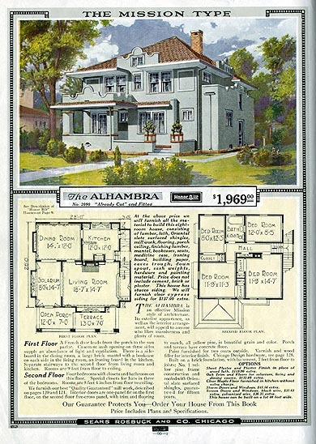
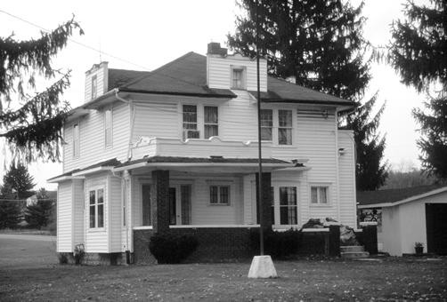
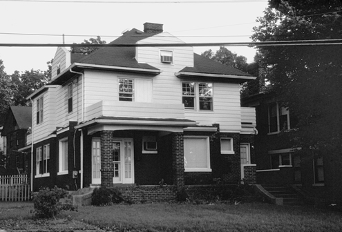
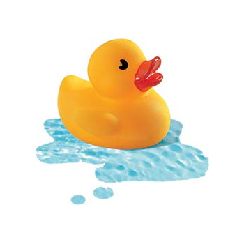

Logistics
- Assignment 0
- Assignment 1: Due Monday, 28-Sep.
- Assignment 2: Handed out on 24-Sep. or earlier
- John Butler: E-mail me: Your TA wants to confer with you
- http://forum.e168f09.plugh.org - send your opinions to me
Agenda
- Notes about Assignment 1 questions
- Bit more on inject, parallel assignment, parallel assignment and block parameters, spaceship, case equality
- Classes, modules
- Setting groundwork for "self"
Assignment 1 Notes
- For Question 4: you may assume that the sorted order of the values is distinct.
- For Question 5: the output order should be the same as the input Hash key order (the wording is a leftover from Ruby 1.8.6/7)
#inject (again)
- Remember that the block must return a value suitable for the memo
- Try code with and without "; m"
- (Error message more obvious in regular irb)
parallel assignment and Arrays
- IF the left-hand side is a single variable, but two (or more) comma-separated items on right . . .
- THEN left-hand side variable is set to an Array
- Last time, we also saw two variables on the left
- Finally, note last line: NOT how parallel assignment works!
Block parameters
- Remember block parameters, inside the vertical bars?
Block parameters are assigned like parallel assignment
- This is a big deal
- Hash#each internally yields an Array
- (NOTE: method parameters are not assigned like this)
The spaceship operator <=>
- a <=> b
- returns -1 when a < b, 0 when a == b, 1 when a > b
- NOTE: When your code implements <=> (2nd hour), return -1, 0, 1 as above
- NOTE: But if you need to examine the return value of <=>, compare < 0, > 0, 'cos some implement incorrectly
- Study the docs for per-class semantics
Using the spaceship operator
- Documentation for Array#sort: "Returns a new array created by sorting _self_. Comparisons for the sort will be done using the +<=>+ operator or using an optional code block. The block implements a comparison between _a_ and _b_,
returning -1, 0, or +1."
- Hmm, interesting that the code block wants to have -1, 0, or +1 returned . . .
The case equality operator ===
- Default is for === to act like ==
- However, means "membership"
Case statement uses ===
- Remember, most classes delegate === to ==
- But Range, Regexp, Symbol, and Class implement ===
- Upshot is that case/when "does what you want"
Case statement (from last time)
Case statement using Range (leveraging case equality)
- Again, it does what you want
Classes and objects
- Class - blueprint, template, etc.
- Attributes and methods defined by the class "blueprint"
Architectural example
- Sears Kit House, "The Alhambra," 1915-1920

But each home (instantiation of a house blueprint) is tailored for a specific state

Another version

Classes and objects
- A class defines the possibilities for state and behavior
- State: How the object's representation can be tailored
- Behavior: What the object can do
- Make a home from a blueprint of a house . . .
- Instantiate an object based on a class
A home's state (like nouns)
- color
- number of rooms
- number of windows
- garage
- notice how the fact that a house can have color is implied by the blueprint, while the actual color is defined by the instantiation
A home's behavior (like verbs)
- set color to a new color
- tell us whether there's a garage
- set garage
- open front door
- close front door
- notice how all of these behaviors are defined by the blueprint, while the state conditions whether the operations will succeed
Hierarchies of blueprints
- Object
- Building is an Object
- a House is a Building
- a Sears House is a House
- an Alhambra is a Sears House
Modeling
- We could have some big arguments
- Which class should define the method garage? Building? House?
- Should garage even be an attribute?
Object construction
- Class names begin with a capital: Hash, Array, String (our old friends)
- Call new on the class by following the class name with a . then new
- Hash.new
- Memory gets allocated
- the new instance's initialize method is called with parameters passed to new
Defining a class
- Starts with keyword "class" ends with "end"
- keyword "class" followed by the name of the class
- Inside the class: method declarations with "def / end"
Method definition
- "def" followed by name of method
- Method declaration terminated with "end"
- Let's add a method to return the color of the home
- Notice that I'm using parallel assignment in initialize
Conventional to use same names
- Not going to baby you
- Use same names for parameter names, instance names, method names
Method parameters
- To define parameters, add parenthesized list of params after method name
- Already doing this with initialize
- Same as above, but using param on color
Defining instance methods within a class: Recap
- Starts with keyword "def" ends with "end"
- keyword "def" followed by optional parenthesized parameter list
Methods: Return values
- Final thing evaluated in method is return value
- Or use "return" to return explicitly
- Use "return" if you need to return a value before end of method
Specializing (inheritance)
- Left angle bracket (less than) indicates superclass
- A SearsKitHouse is a House, but with extra attributes
- Notice: Because a SearsKitHouse "extends" a House, it gets to do everything a House can do
- P.S. Use of set_, get_: Not the Ruby Way! More later . . .
Relationship between Class and Superclass
- Class to superclass must satisfy "Is a?"
- (House is a Building; is a Building always a House?)
Classes: Modeling
- Did we model House right?
- Must all Houses have a door?
- Can another subclass of Building have a door?
- Adding an additional subclass . . . Are Huts Houses?
- Is a Hut a SearsKitHouse?
Duck Typing

Duck Typing: 1 of 3
- Assume that the Cassette and AudioStream classes both have age_level methods
- Our Player indicates the age level of the media it plays
Duck Typing: 2 of 3
- Notice: Player.play accepts . . . anything . . . and works if what's passed in implements age_level
- Notice as well that there might be semantic mismatch between playing media and playing (with) a toy
- Example is deliberately queasy
Duck Typing: 3 of 3
- "If it walks like a duck, and talks like a duck, it's a duck."
- (Or it might as well be a duck.)
- We are interested in the capabilities of an object.
- Java developers .;oO: "This makes me very nervous..."
- Java projects increasingly use reflection to identify methods that can be "invoked" rather than using Interfaces (why? Because if the Interface signature or packing changes, everything breaks)
- Read Pickaxe chapter "Duck Typing"
Instance variables
- Prefixed with @
- Only directly accessible inside object; no other objects can get at instance variables except via method
- Java developers take note: You can't make a variable "public"
- Again, must define a method to permit outsiders to get value
Adding a Setter
- Remember when we defined get_num_parts ? Not the Ruby Way
- Ruby allows us to pretend that we can assign to a property
Even better: Convenience declaration
- Possible to declare properties
- attr_accessor, attr_reader, attr_writer
- Now we don't have to define age_level=(...) ourselves
attr declarations
- attr_accessor: read and write (like getter and setter)
- attr_reader: read only
- attr_writer: write only
Let's look at our House code again
Methods: No overloading!
- Sorry, Java and C++ developers
Methods: Default values for parameters
- Possible to define default values in method declaration
Common Java developer mistake
- Instance variables must be set / manipulated inside methods
- If @ variable outside method, means something else (next lecture)
Can't use "getter/setter"-style methods w/o receiver
- Notice below we say attr_accessor to define methods current_opponent= and current_opponent
- But the syntax is only identified when there is a receiver (when you use a dot to indicate a receiver)
- Without receiver, you just assign to a new local variable
Access control for methods - the idea
- Suppose we have a class that manages a social security number
- Should other classes be able to retrieve it?
Access Control for methods
- All interpreted at run-time; and can be changed at run-time
- Public: anyone (default)
- Protected: invokable by defining class and subclasses; good for when an object of Class A needs to get invoke a method on another instance of the same class (e.g., for <=>)
- Private: Next slide
Private
- Not allowed to call method on explicit receiver
- That is: If def foo(x); end is a private method on bar, can't say: bar.foo(5)
- Can only say foo(5)
- Assumes that message (foo) will be sent to the current object
- Similar to "privacy" of instance variables
Private - consequences
- Invokable only by another method in same object, via descendants or ancestors
- Commonly wrongly described as working only for class or subclasses
- Note that initialize is (implicitly) private; called during object construction
Access control - how to declare
- Put "private" "public" or "protected" keyword in front of methods
- Then switch to other visibilities as needed by adding keyword again
Access control -how to declare (2)
- Alternative: follow keyword with symbol-style name of methods
Access control - private - examples
- Private methods much like instance variables
- subclasses do get access
Access control - private - from superclass
- Even a superclass can call a subclass's private method (!)
Scope and Naming
- Global: Available everywhere: Prefix with $
- Class: Owned by the class: Prefix with @@
- Instance: Owned by the instance: Prefix with @, use lowercase
- Local: Local to block: use lowercase
Modules
- A module is a class without its own state
- It provides capabilities
- It's a mixin
Suppose: Things that we can compare
- A SearsKitHouse extends a House
- Might it also extend another class: E.g., Comparable
- Should Comparable really be a class?
- Can there be a thing that is ONLY Comparable?
Suppose: A SearsKitHouse has a Chimney
- You can open and close the flue on a chimney
- Should the SearsKitHouse extend both House and Chimney?
- Why or why not?
Module provides capabilities
- A SearsKitHouse extends House, and includes OperableChimney
- OperableChimney might provide methods such as . . .
- open_flue
- close_flue
Sample class and module
Comparable
- What the documentation says (ri Comparable)
Comparable SearsKitHouses?
- On what basis would we compare two SearsKitHouses?
Let's make the houses comparable
The End